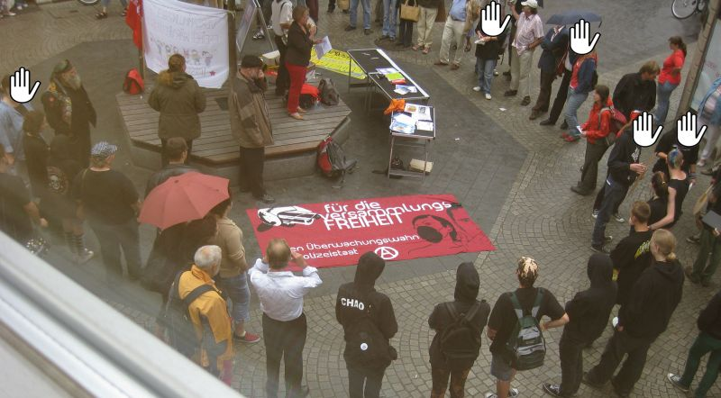
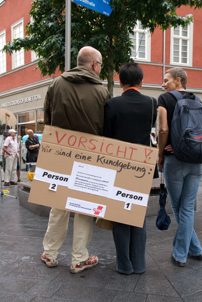

Nur etwa 70-80 Personen beteiligten sich an der Kundgebung. Enttäuschenderweise schafften es weder Gewerkschaften noch Parteien ihr (vorhandenes?) Mobilisierungspotential auszuschöpfen und Menschen auf die Straße zu bringen. Redner von DGB und Parteien sowie der Anarchistischen Gruppe Aschaffenburg thematisierten die Auswirkungen des geplanten Gesetzes.
Leider war das Wetter nicht besonders toll, deshalb bauten die Gewerkschafter ihren Infostand schon nach kurzer Zeit wieder ab.
Mehr Ausdauer zeigten dagegen etwa 40 Unkontrollierbare, die mit Transparenten und Schildern ausgerüstet nach der Kundgebung noch etwa eine halbe Stunde durch die Fußgängerzone und das Einkaufszentrum „City Galerie“ zogen und Flyer verteilten.
Einen ersten zusammenfassenden Bericht findet ihr hier. Danke an alle die da waren, hat ne Menge Spaß gemacht!
Fotos:

Redebeitrag der „Anarchistischen Gruppe Aschaffenburg“
Informationen:
Interaktive Flashgrafik
Aufruf der Veranstalter

Hm, auf dem Flyer unten ist auch das Symbol der Polizeigewerkschaft. Macht den Auszeitnews jetzt gemeinsame Sache mit der Polizei?
ist das ne reine gewerkschaftsdemo oder kommen da auch antifas??
Ist doch der Aufruf des Veranstalters nicht der von Auszeit-News. Ich glaube die GDP ist teil des DGB
es waren auch ein paar antifas da, jo

die gdp ist im dgb, deshalb auf dem flyer, aber von denen war nicht so wirklich was zu sehen
glaub nicht das auszeit irgendwann mal gemeinsame sache mit uniformierten macht
Arghhh verpasst >_